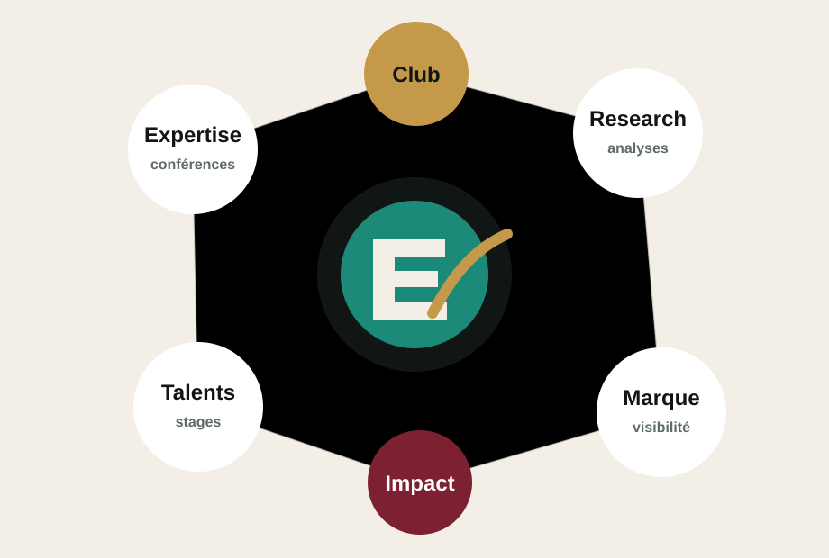

Former
Ateliers finance de marché, bases produits, modélisation, Excel, Python et préparation aux entretiens techniques.
École Centrale Casablanca
Le club qui transforme la curiosité financière en culture de marché, en analyses lisibles et en passerelles concrètes avec les professionnels.
Le Club
ECC Finance gère les activités associatives liées à la finance à Centrale Casablanca: initiation, orientation, rencontres, simulations métiers et mise en relation avec l'écosystème.
Ateliers finance de marché, bases produits, modélisation, Excel, Python et préparation aux entretiens techniques.
Conférences, simulations de métiers, visites et projets pour relier les cours d'ingénieur aux usages de la place financière.
Un pont propre entre étudiants, alumni, entreprises, plateformes d'analyse et intervenants qui veulent investir dans les talents.
Des contenus pédagogiques, analyses macroéconomiques et décryptages sectoriels sans recommandation d'investissement.
Esprit 2026
Chaque activité part d'un livrable clair: comprendre un instrument, résumer un marché, pitcher un métier, préparer une rencontre ou produire une note. L'objectif n'est pas de faire du bruit, mais de construire une réputation de sérieux.
Publications
La ligne éditoriale est éducative: analyses mensuelles, notes rapides, décryptages marocains et internationaux, toujours avec prudence et transparence.

Un format court pour relier indices, résultats, taux et actualité économique marocaine.
Proposer une noteUne série issue de l'esprit des ateliers d'initiation pour rendre les fondamentaux vraiment accessibles.
Organiser un atelierDes repères de préparation, des lectures et des retours d'expérience pour les candidats motivés.
ContribuerLes contenus publiés par ECC Finance ont une finalité pédagogique et informative. Ils ne constituent ni conseil en investissement, ni recommandation d'achat ou de vente.
Partenaires
ECC Finance propose aux partenaires un accès direct à une communauté d'ingénieurs intéressés par la finance, avec des formats concrets: conférence, workshop, publication, recrutement, visibilité campus.
Partenaire actif
Un partenariat 2026/2027 autour des processus de recrutement en banque et MSc Finance, avec conférence, accès JOBTALK, réductions formation et workshop annuel.

Présence dans les supports du club, relais campus et mise en avant sur la page partenaires.
Rencontres ciblées avec des élèves intéressés par finance de marché, corporate finance, data et quant.
Co-organisation de workshops, panels ou publications éducatives à forte valeur pour la communauté.
Contact
Pour proposer une intervention, sponsoriser un format, rejoindre le research desk ou demander une collaboration, contactez l'équipe ECC Finance.